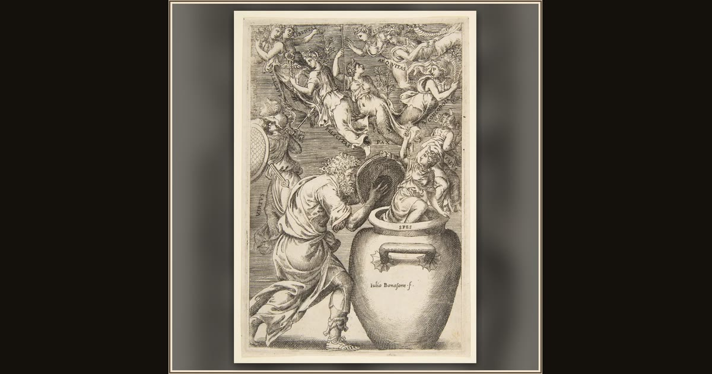

Epimetheus opening Pandora's box
Giulio Bonasone · 1531–76 · met
Bonasone shows Epimetheus lifting the lid of a great jar as labelled blessings fly off and Spes, Hope, stays at its rim, as Hope alone remained within the jar (95–99) Explore its place in Hesiod's Poems, Works and Days, line 96.